AMPERSAND
START A PROJECT ➔
“以建筑与室内双重视角，重塑存量商业资产与城市微空间。”
不止建筑（AMPERSAND Studio）立足存量时代，致力于通过低成本高弹性的空间介入、商业动线重组与在地文脉挖掘，为老旧商业、文旅孤岛与城市微空间提供从宏观系统策略到微观细部落地的全周期解法。
针对废置湖心岛屿的系统性活化策略。通过打通内外视线廊道、重塑滨水亭台与动线，将荒废场地重构为集日间微度假、品质餐饮与夜经济于一体的全时段复合场景。
📍 项目类型：文旅度假 / 商业建筑与景观微改造
💡 关键策略：低扰动介入、全时段经营流线、水体景观与建筑无缝衔接

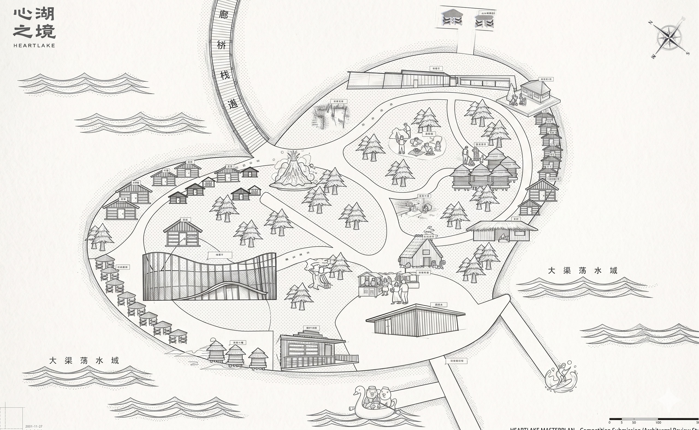
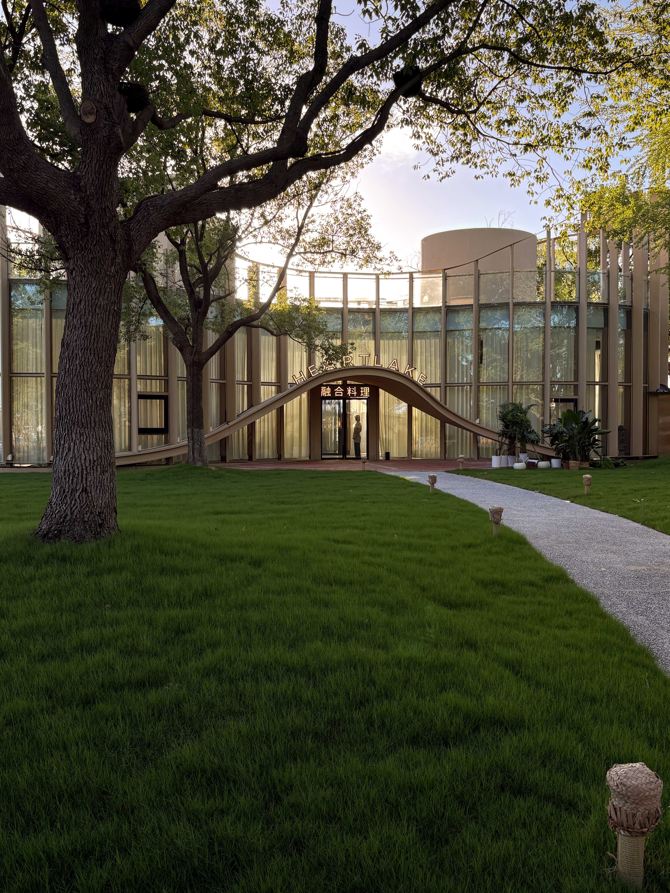
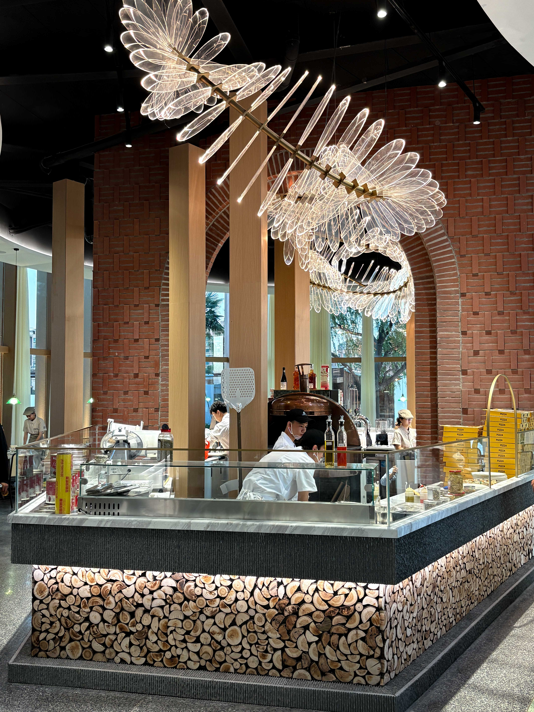
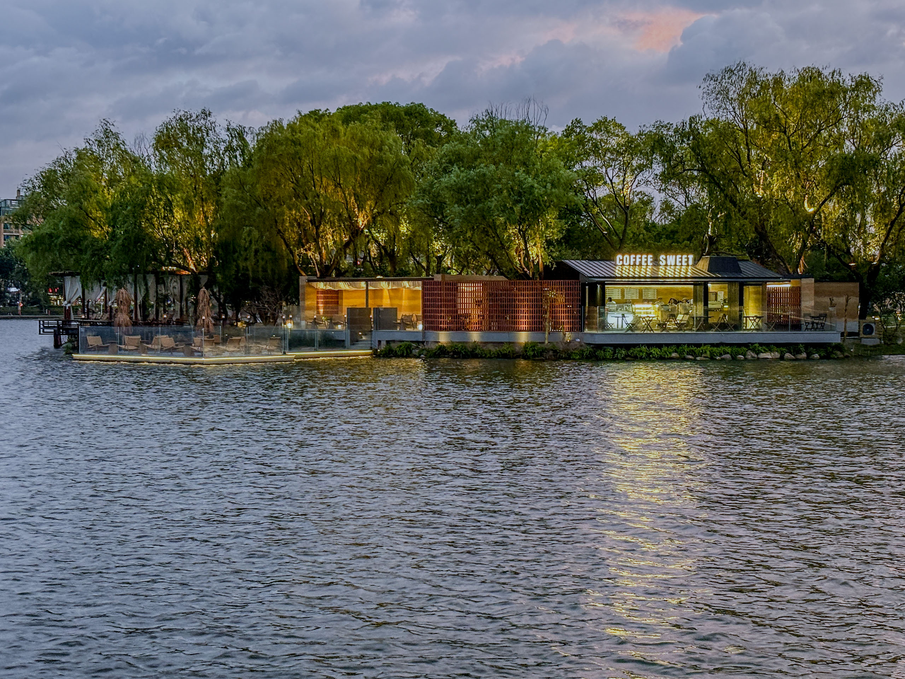
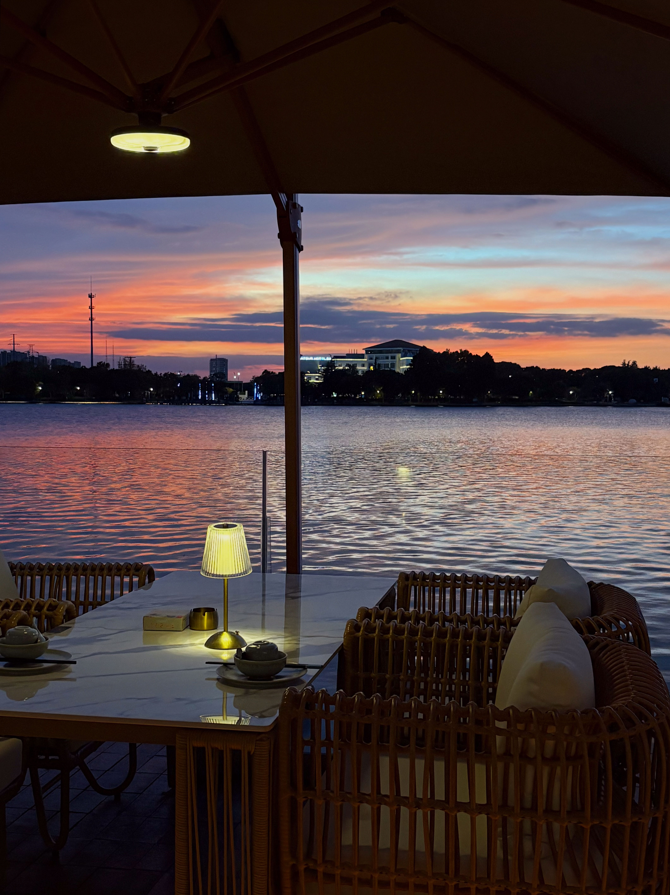
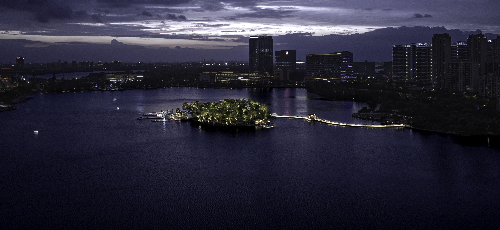

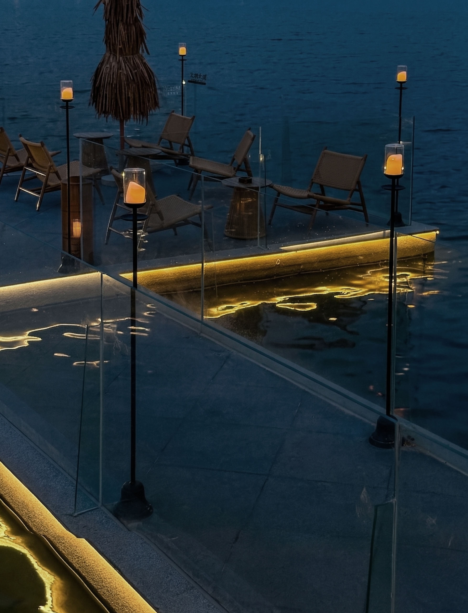
直面街道老旧陈腐的物业现状。通过出餐动线精简与低造价材料策略，以极低平方成本完成老旧商业起死回生。
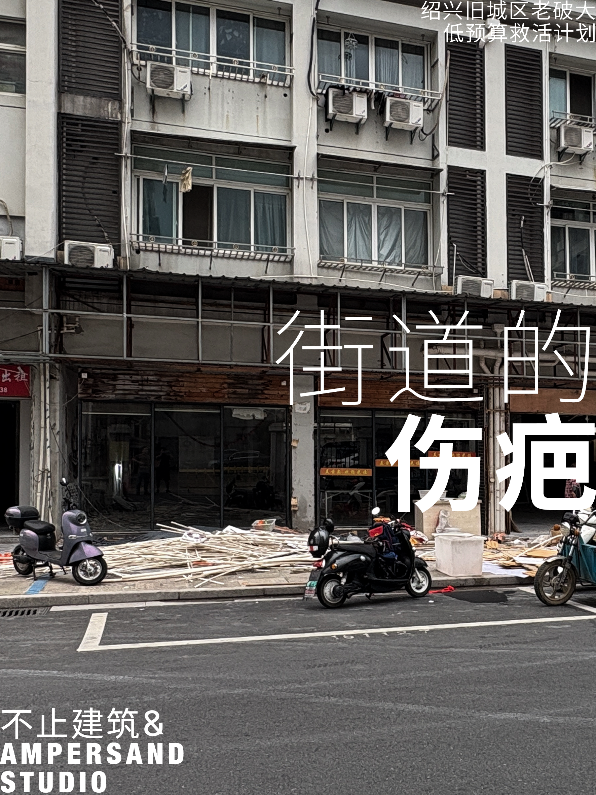
原状：街道伤疤 更新后门头夜景
更新后门头夜景
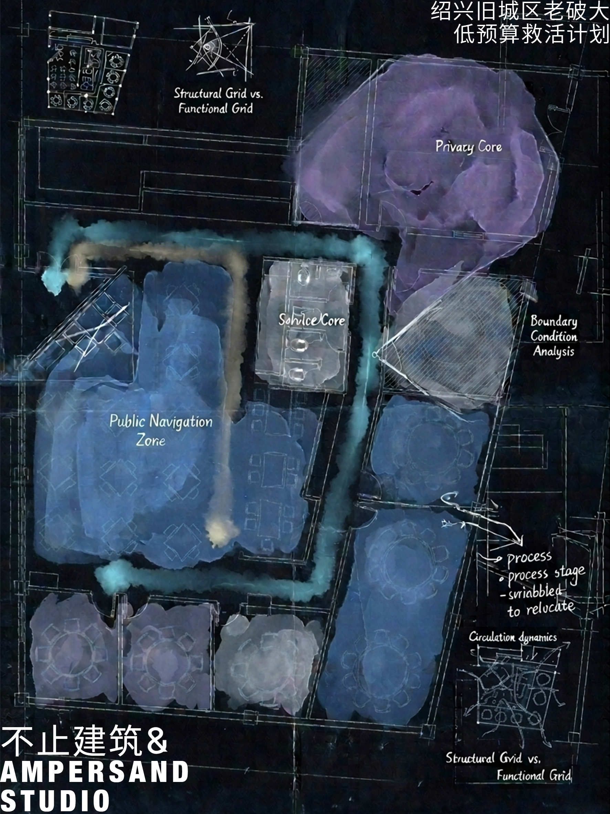


盘活港口遗留的老花窖建筑群，引入绿色能源与被动式节能体系，构建集艺术策展、日咖夜酒与先锋社群于一体的港口文化微地标。


剖析历史街区界面在快速机动化进程中产生的空间割裂，建立“空间摩擦力”分析图谱，探索如何通过微小构件与界面微干预重新缝合街区烟火气与步行密度。
跳出传统砌体思维，以拓扑生成逻辑推导装配式轻量化建筑体量。探索极限场地约束下的可拓展居住原型，兼顾快速拼装弹性与极简几何张力。
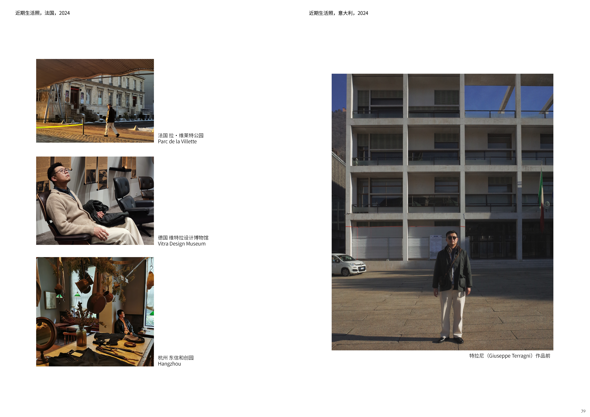
毕业于“建筑老八校”之一的西安建筑科技大学（建筑学硕士），本科深造于环境艺术设计专业。长期的跨界深耕，消除了“宏观建筑体量与构造”与“微观空间情绪及材质”之间的认知鸿沟。
欧洲建筑游学实录与沉淀：历经欧洲各时期古典遗存与当代先锋建筑的现场研读，确立了“新旧共生、克制干预”的核心方法论。我们拒绝浮于表面的装饰堆砌，主张用最精炼的结构与材料语言，让老旧空间在历史痕迹与现代商业逻辑中再次生长。
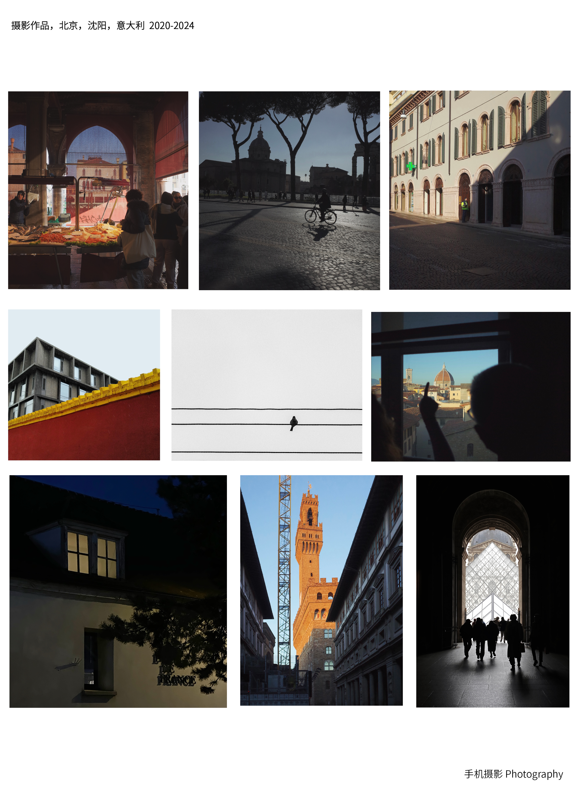
无论您面临老旧商业低预算突围、文旅荒岛盘活，还是微更新改造，欢迎随时与我们建立联络。
📩 官方邮箱：contact@buzhi.studio
📍 工作室坐标：中国 · 杭州